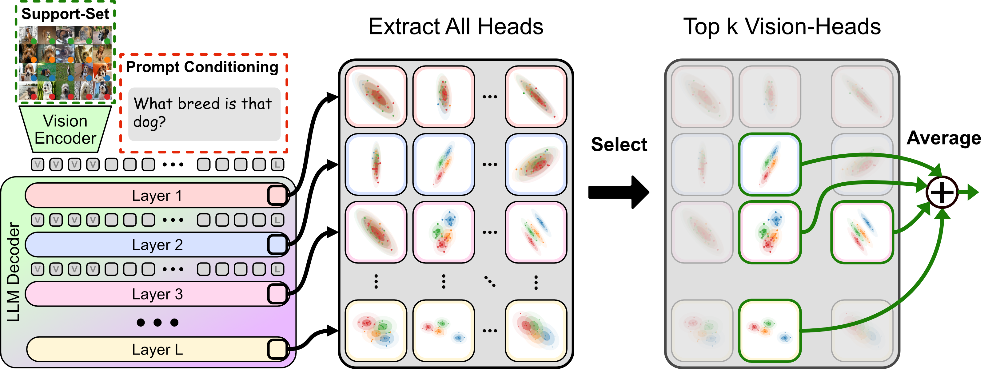

Vision-heads are better than the model’s output at few-shot classification. HEC-V evaluates the prompt-conditioned features of each attention head using Gaussian Discriminant Analysis (GDA) on the support set. It then selects a sparse set of the 20 most discriminative vision-heads and combines their predictions into the few-shot classifier.